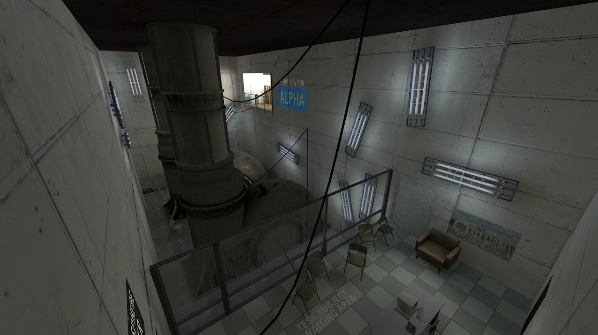
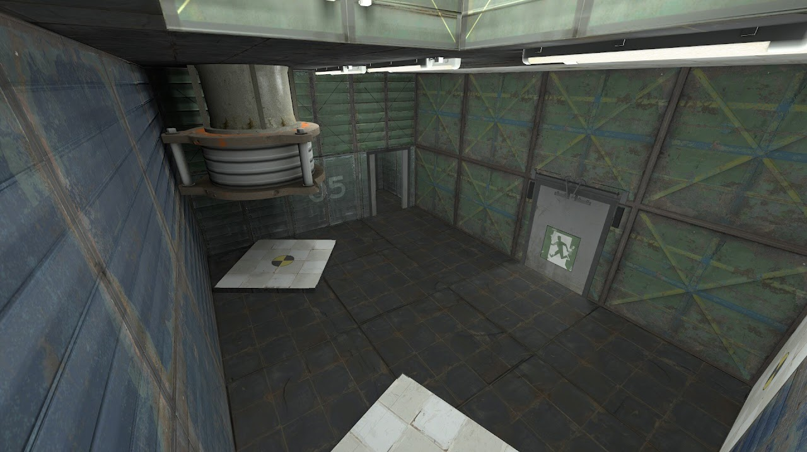

Hello and welcome to my corner! I am electrovoyage, I make Portal 2 maps and tons of custom assets. Here are a few of my creations:

Made in about three days.
Steam workshop link
Rediscovered: Chapter 1 - Bounce
Rediscovered: Part 1 is the first part of a Portal 2 mappack called Rediscovered. After you get off an elevator and exit an office, you find a repulsion gel pump station. What will you find? How can you get out of Aperture Science?Made in about three days.
Steam workshop link

Probably made in like a month.
Steam workshop link
Rediscovered: Chapter 2 - Bounce
Rediscovered: Part 2 is the sequel to Part 1. You get a small glimpse of propulsion gel testing, and then you escape the chambers again.Probably made in like a month.
Steam workshop link